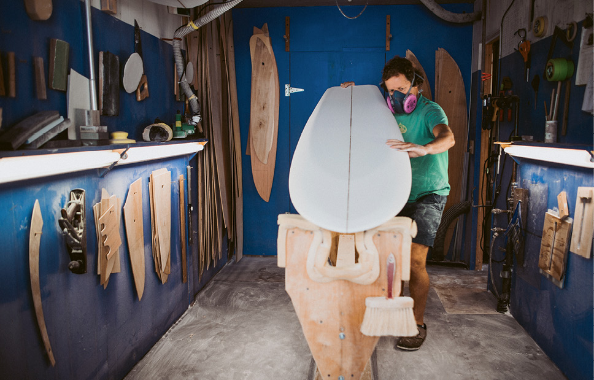

TODD CARANTO
Todd Caranto is a paddle surfer, competitive athlete, and designer. He is the founder of Pau Hana Surf Supply and the creator of it’s innovative product line. The winner of Outside magazine’s first “Gear of the Year” award for stand up paddle boards, Todd has a passion for creating market-leading products built for Pau Hana time.A maker since childhood when his grandfather put the first tool in his hand, Todd’s design philosophy and approach to development is hands-on, multidisciplinary, and intuitive. He participates in each activity he designs for, and seeks feedback from the sport’s most dedicated enthusiasts. Receiving inspiration from material science, bio-mimicry, and art, Todd translates those interests into beautifully designed boards that are well suited to their individual purposes.

CREATION
Pau Hana takes an avant garde approach to the design process with emphasis on experimentation and thorough testing. Since our inception, Pau Hana has striven to develop a process of board design that integrates rigorous research, testing, experimentation, feedback and repeating these steps until we have a product that our design team knows inside and out and can’t wait to get out on the water more with.Pau Hana takes the origins of stand up paddling and surfing very seriously, but still works towards the great opportunity for improvement in the shapes, materials, designs, and functionality of boards. Especially in recent years, the things that people have been doing on paddle boards has grown tremendously. Whether this is fishing from a stand up paddle board or doing SUP yoga, the possibilities that stand up paddle boards offer people has been growing in part to new technologies. Pau Hana has created new technologies like the SeaMount® System, the Lotus Yoga Ring, and Ricochet™ Technology to get people out on the water more. These new technological advances have allowed Pau Hana to bring our brand to the next level. This allows our customers to feel the stoke of being out on the water longer, safer, faster, and in ways that have never been done before.